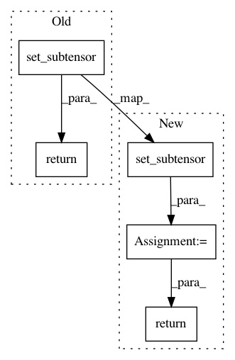

268710944c3b60049188ed2764aebc08de9bd417,pymc3/variational/ADVI.py,,inner_gradients,#Any#Any#Any#,78
Before Change
duw = gradient(logp(q), [uw])
return theano.tensor.set_subtensor(duw[l:], duw[l:] + 1)
tprint = theano.printing.Print()
def adagrad(grad, param, learning_rate, epsilon, n):
After Change
duw = gradient(logp(q), [uw])
// Add gradient of entropy term (just equal to element-wise 1 here), formula 6
duw = theano.tensor.set_subtensor(duw[l:], duw[l:] + 1)
return duw
def adagrad(grad, param, learning_rate, epsilon, n):
// Compute windowed adagrad using last n gradients
i = theano.shared(np.array(0), "i")
In pattern: SUPERPATTERN
Frequency: 4
Non-data size: 5
Instances
Project Name: pymc-devs/pymc3
Commit Name: 268710944c3b60049188ed2764aebc08de9bd417
Time: 2016-03-31
Author: thomas.wiecki@gmail.com
File Name: pymc3/variational/ADVI.py
Class Name:
Method Name: inner_gradients
Project Name: rodluger/starry
Commit Name: b08c10880156a0bc3060ad2c92aa80efaecfaef8
Time: 2019-06-04
Author: rodluger@gmail.com
File Name: starry/ops/ops.py
Class Name: Ops
Method Name: set_map_vector
Project Name: keras-team/keras
Commit Name: 4487510c90b0398d7107e6c931c96c8904d83f9e
Time: 2017-02-26
Author: basveeling@gmail.com
File Name: keras/backend/theano_backend.py
Class Name:
Method Name: temporal_padding
Project Name: keras-team/keras
Commit Name: e99eac292db998960b9c384cb1106998a8489b02
Time: 2017-03-06
Author: abhai.dilip@gmail.com
File Name: keras/backend/theano_backend.py
Class Name:
Method Name: spatial_2d_padding